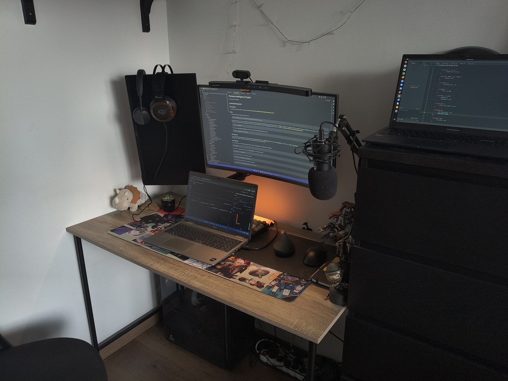

Moje pracovisko
Ako pracujem?
Takto vyzerá môj stôl doma: tu pracujem, študujem a píšem tento web. Prejdite myšou na označené miesta alebo medzi nimi prechádzajte klávesom Tab — poviem vám, čo tam je.

Otvorený novým nápadom a rastu
Takto vyzerá môj stôl doma: tu pracujem, študujem a píšem tento web. Prejdite myšou na označené miesta alebo medzi nimi prechádzajte klávesom Tab — poviem vám, čo tam je.
